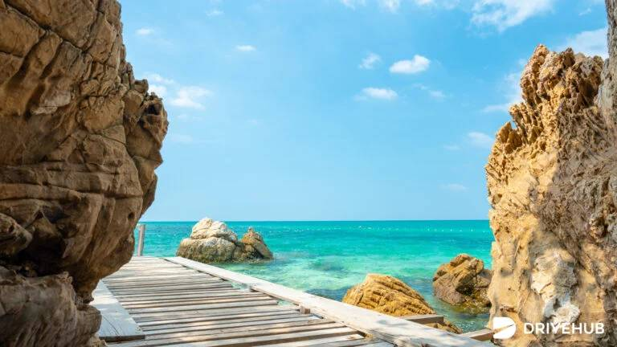
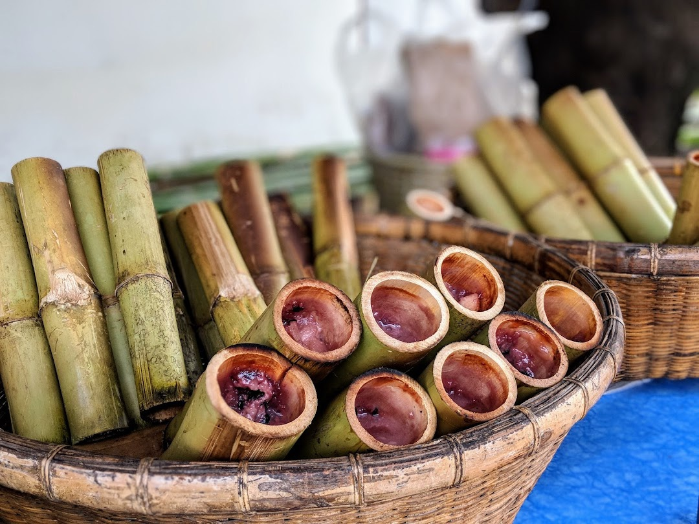
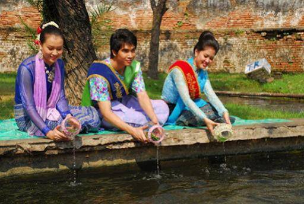
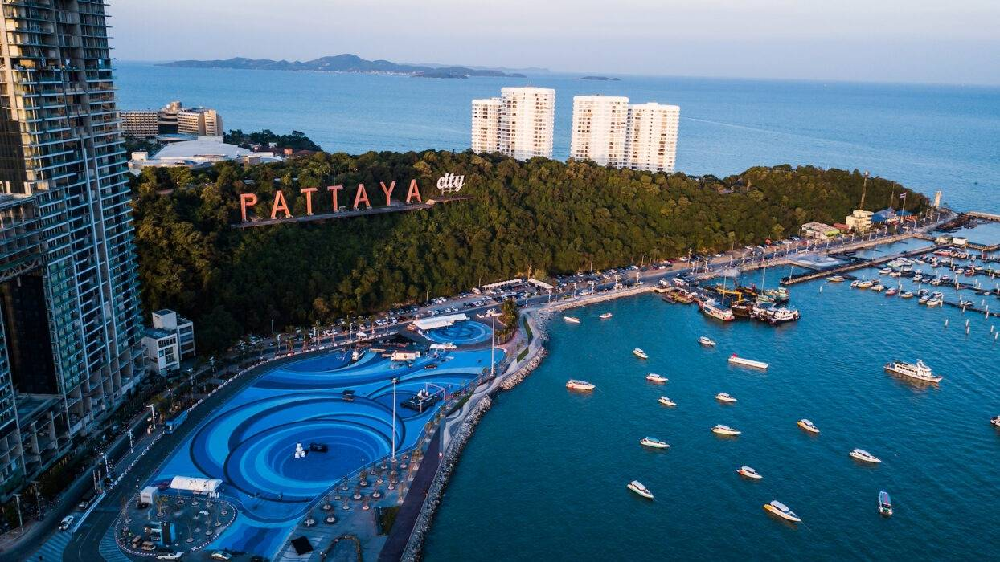
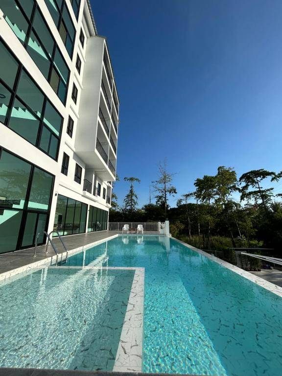
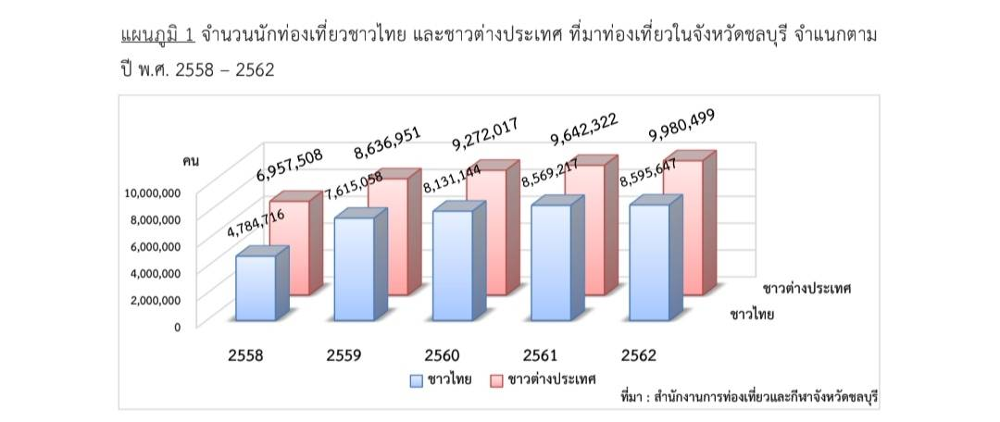

เมืองเดียว เที่ยวได้หลายอารมณ์
จากหาดบางแสนถึงพัทยา จากของฝากหนองมนถึงนิคมอุตสาหกรรม ชลบุรีคือจังหวัดที่มีทั้งความสนุก ความอร่อย และเรื่องราวให้ค้นพบในทุกระยะทาง
เว็บไซต์ทางการชลบุรีทีมผู้จัดทำ
น.ส.กรกวี มะลิวัลย์เลขที่ 19
น.ส.เทวิกา โสดดีเลขที่ 24
น.ส.ปารจรีย์ ใจรื่นเลขที่ 27

GO / ออกไป
สถานที่ท่องเที่ยว
เกาะ น้ำตก สวนสัตว์ และมุมถ่ายรูปที่ทำให้วันหยุดมีสีสัน

TASTE / ลองชิม
อาหารเด่นเมืองชล
ของฝากและรสชาติท้องถิ่นที่พกความทรงจำกลับบ้านได้

ROOTS / รากของเรา
ประเพณีวัฒนธรรม
เทศกาล งานบุญ และภูมิปัญญาที่ทำให้ชลบุรีมีชีวิต

CITY / เมืองริมทะเล
พัทยา
เมืองชายทะเลที่มีทั้งประวัติศาสตร์ วิวทะเล และสีสันไม่เคยหลับ

STAY / พักผ่อน
โรงแรม
เลือกที่พักให้เข้ากับจังหวะการเดินทางของคุณ
MOVE / ขับเคลื่อน
เศรษฐกิจสำคัญ
มองชลบุรีผ่านอุตสาหกรรม โลจิสติกส์ และโอกาสใหม่

INSIGHT / มองให้ลึก
จำนวนนักท่องเที่ยว
ตัวเลขและภาพรวมการเดินทางที่สะท้อนเสน่ห์ของเมืองชล